Blank walls have a way of just sitting there, quietly waiting.
If you've got even a little bit of an itch to pick up a paintbrush, boho painting is the most forgiving place to start. It's built around expression over precision, which means there's genuinely no wrong way to do most of these.
Earthy tones, dreamy motifs, a bit of tribal influence, a lot of imperfect freehand energy. That's the whole aesthetic in a sentence. You don't need an art degree, or even particularly steady hands.
Here are ten approachable ways to bring that energy onto your own walls, whether you're starting completely from scratch or just looking for the next weekend project.
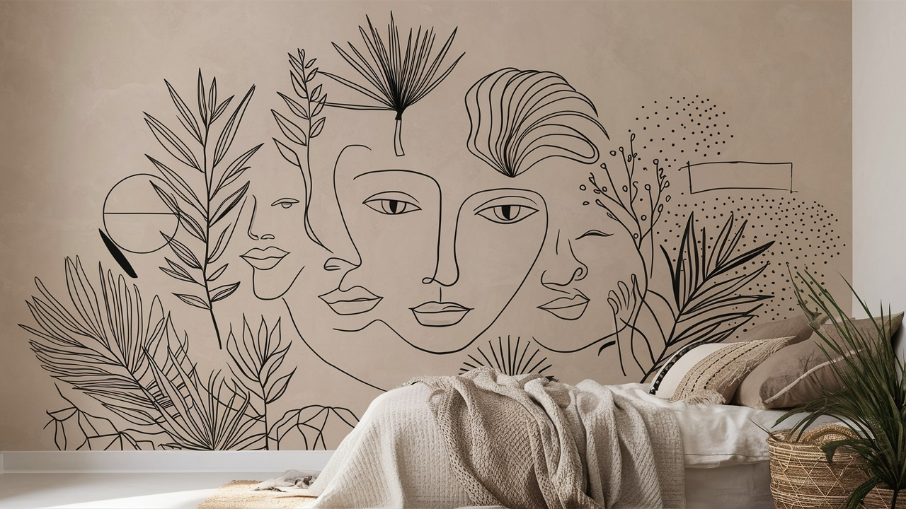
1. Paint a Quote Worth Looking at Daily
Sometimes what a wall needs isn't a scene. It's a sentence.
Pick a quote, mantra, or lyric that actually means something to you and build the art around it.
Pair the lettering with soft florals, feathers, or a loose geometric frame, and keep the palette calm so the words stay the focus rather than competing with the illustration around them.
Hang it near an entryway or workspace, somewhere you'll actually glance at it on your way past. That's the whole point of a quote piece, after all.
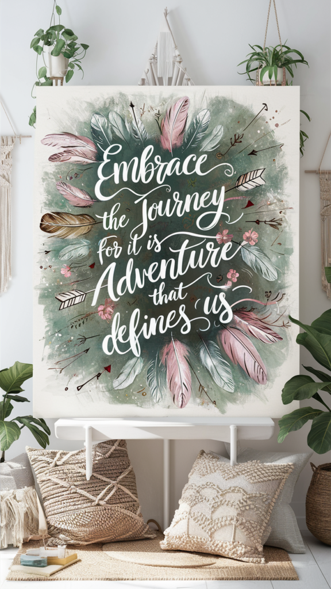
2. Paint a Desert Scene for Instant Warmth
Boho and desert landscapes were made for each other. A few cacti, rolling dunes, and a glowing sunset in sandy tones and burnt orange go a long way.
You don't need to render it with total precision. A handful of confident strokes reads as a desert scene far more easily than you'd expect.
It's a great fit for a hallway, reading nook, or any spot that could use a little warmth without committing to a loud color on the walls themselves.
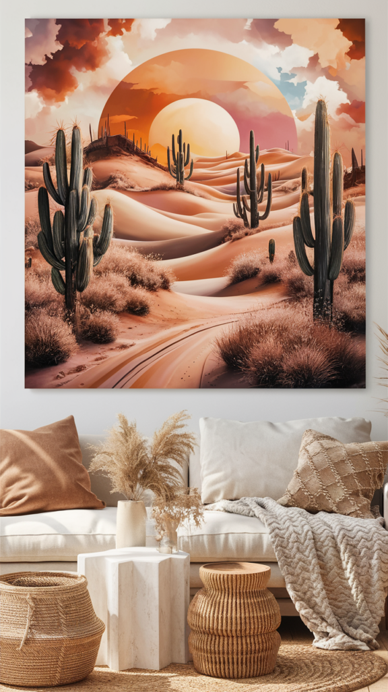
3. Try a Painted Dreamcatcher
Dreamcatchers are about as iconic as boho motifs get, and painting your own version is more approachable than it looks. It's really just circles, flowing feathers, and a scattering of beads.
Keep the palette soft: taupe, ivory, dusty blue, a little gold. The muted tones are what make it feel calming instead of costume-y.
This one belongs over a bed or in a reading corner. Add a few fairy lights woven through it, and it becomes the kind of piece that makes a whole room feel a little more peaceful.
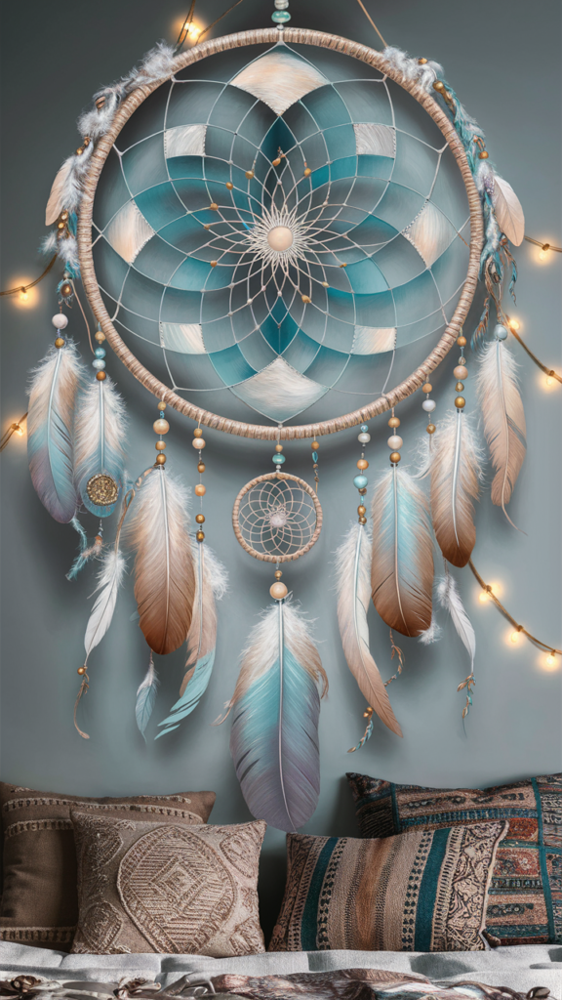
4. Line Up a Row of Soft Arches
Forget the primary-color rainbow from grade school. The boho version is muted arches in clay, blush, and sand, layered together in a simple repeating composition.
Painter's tape makes this one surprisingly approachable. Mask off your arch shapes, fill with two or three colors, and you've got a piece that looks far more complicated than it was to make.
It reads as cheerful without being childish, which makes it a genuinely good fit for a nursery, playroom, or guest room that needs a little lift.
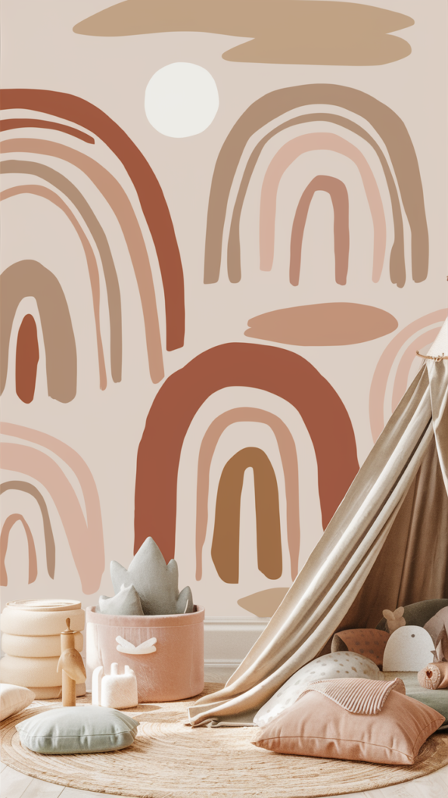
5. Go Bold With a Geometric Pattern
For something with more visual punch, geometric tribal-inspired patterns deliver instantly. Think sharp zigzags and diamonds in black, rust, and cream layered on a dark base.
This works especially well in a hallway or entryway. The kind of transitional space that benefits from one bold, grounding moment rather than a dozen small decisions.
These patterns usually draw on real cultural traditions, so it's worth spending a little time learning where the motifs come from before you paint them. Understanding the symbolism makes the finished piece feel more considered, not just decorative.
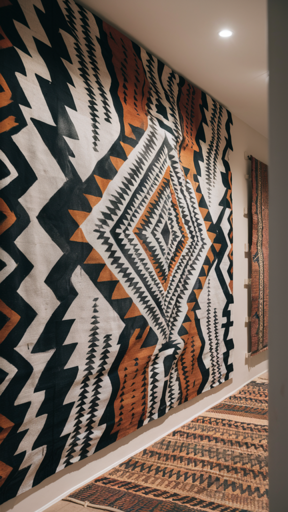
6. Go Oversized With Botanical Watercolors
If florals are more your speed, go big rather than delicate. Think exaggerated leaves and abstract blooms rather than tight, precise botanical illustration.
Muted sage and soft coral keep it calm. Deeper jungle greens push it more dramatic. Both directions work.
A floor-to-ceiling version turns an entire wall into the room's focal point, but the same idea scales down nicely as a few smaller framed pieces over a reading nook too.
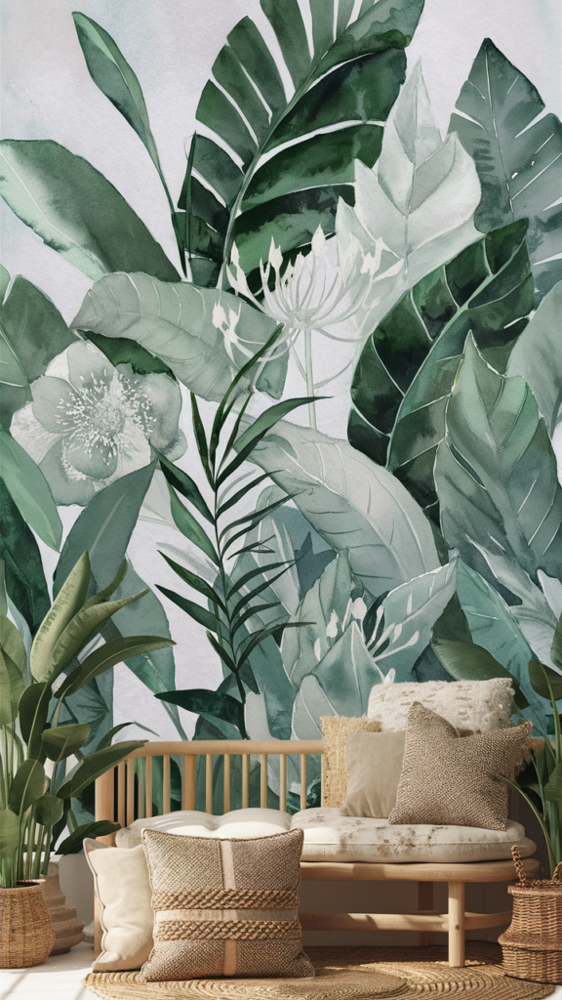
7. Try a Mandala, If You Have the Patience
This one takes longer than the rest, but it's worth the extra sitting. Mandalas are symmetrical, meditative to paint, and genuinely mesmerizing once they're finished.
Keep it small and contained on a canvas, or go big and treat an entire wall or alcove as your canvas.
Don't aim for perfect symmetry on your first attempt. Boho was never about precision. The slightly imperfect version usually looks more alive than the flawless one would have.
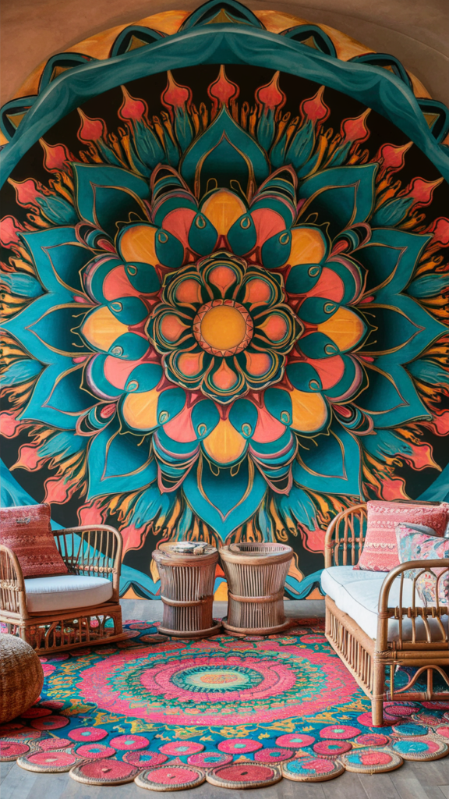
8. Paint a Sun, Moon, and a Little Cosmic Drama
Celestial motifs are a boho staple for a reason. A gold sun and a soft crescent moon on a canvas instantly reads as dreamy without trying very hard.
Lean into navy, gold, dusty lilac, or a soft marbled background. It works especially well in a bedroom, where the whole point is winding down.
Add a string of fairy lights nearby and the effect practically does itself.
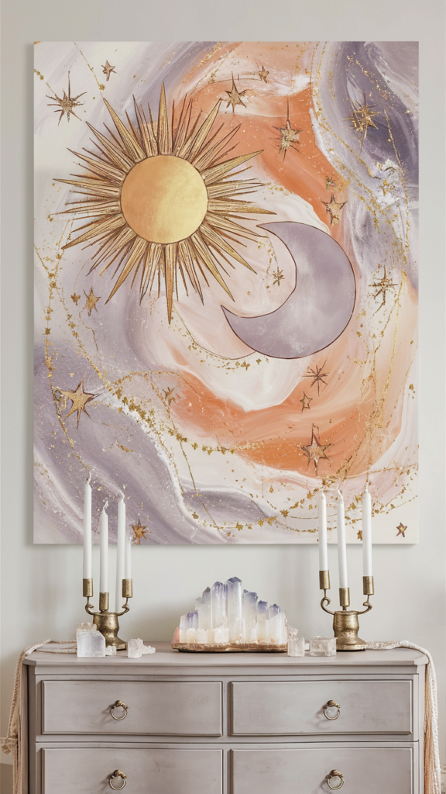
9. Sketch a Single-Line Portrait
Minimalist line art has a way of looking intentional even when you genuinely have no idea what you're drawing until it's done.
One continuous line, a face, maybe a botanical sprig tangled into the hair, all you really need is a neutral wall or canvas and a steady-ish hand with a paint pen.
It's an especially good fit for a Scandinavian-leaning or minimalist bedroom, where you want personality without adding visual noise.
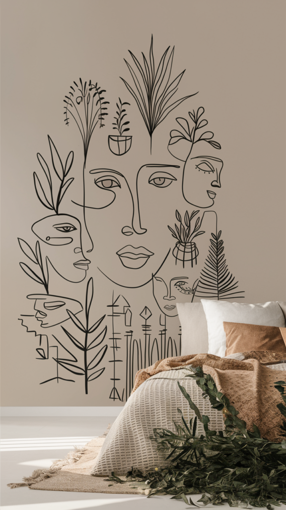
10. Finish With Earthy Abstract Arches
This is the fastest route to something that looks like it came from a gallery instead of your living room floor.
Pick three or four earthy tones, terracotta, olive, mustard, a dusty pink if you're feeling it, and paint loose arches, blobs, and curved shapes freehand. The less you plan it, the better it tends to look.
Hang it above a sofa or lean it against the wall on a shelf. Either way, it reads like something you'd find in a much more expensive catalog than you'd expect.
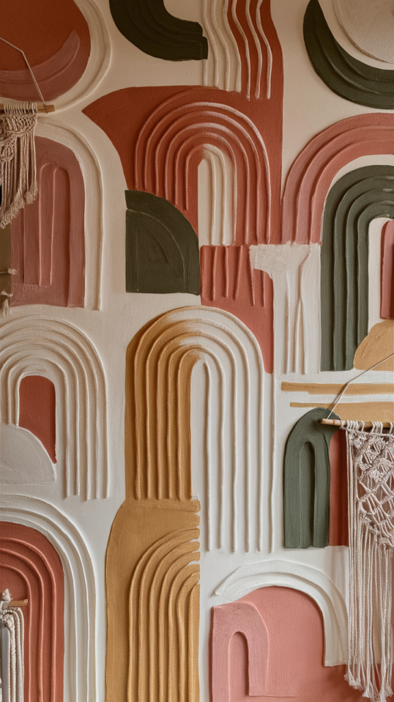
There's No Wrong Way to Start
If your walls have been feeling a little flat and you're craving something that actually looks like you, boho painting is about as accessible as a creative project gets. Cheap, forgiving, and genuinely fun even if the last time you picked up a paintbrush was a school art class.
Grab a canvas, or an old board, or honestly just a section of wall you don't mind committing to. Pick whichever palette feels right and start. Abstract, botanical, celestial, it really doesn't matter which direction you go.
And if it doesn't turn out how you pictured it? Just paint over it and try again. That's basically the entire spirit of boho art, honestly.